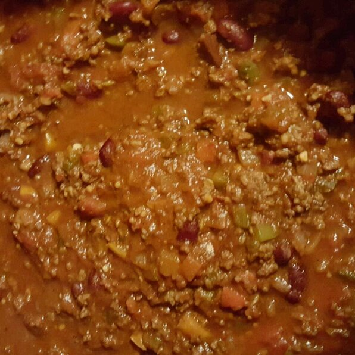

Chuck's Super Chili

Description
This chili is slightly sweet with a touch of heat; the wine gives it a different taste. Everyone in my family loves this chili. I've won a couple of work chili cook-offs with this recipe and done well in some larger cook-offs as well.
Ingredients
- 2 pounds hot Italian sausage
- 2 pounds ground sirloin
- 1 large onion, chopped
- 1 red bell pepper, chopped
- 1 yellow bell pepper, chopped
- 1 green bell pepper, chopped
- 8 cloves garlic, minced
- 2 jalapeno peppers, finely chopped
- 3 tablespoons chili powder
- 2 tablespoons brown sugar
- 1 tablespoon ground cumin
- 1 (6 ounce) can tomato paste
- 2 teaspoons dried oregano
- ¼ teaspoon salt
- ½ teaspoon freshly ground black pepper
- 2 bay leaves
- 2 cups Merlot or other dry red wine
- 2 (28 ounce) cans whole tomatoes, undrained and chopped
- 2 (15 ounce) cans dark red kidney beans, drained
- 1 (15 ounce) can tomato sauce
- 3 chipotle peppers in adobo sauce, chopped
Steps
- Heat a large skillet over medium-high heat and stir in Italian sausage and ground sirloin. Cook and stir until meat is crumbly, evenly browned, and no longer pink. Drain and discard any excess grease.
- Transfer meat to a large Dutch oven; place over medium-high heat. Stir in chopped onion; add red, yellow, and green bell peppers, garlic, and jalapeno peppers. Cook and stir until onion is translucent, about 5 minutes.
- Mix in chili powder, brown sugar, cumin, tomato paste, oregano, salt, black pepper, and bay leaves. Cook and stir until fragrant, about 3 minutes more.
- Stirring constantly, pour in wine, chopped tomatoes and their juice, kidney beans, tomato sauce, and chopped chipotle chiles in sauce. Bring to a boil. Cover, reduce heat to low, and simmer, stirring occasionally, for 1 hour.
- Uncover and simmer, stirring occasionally, until thickened, about 30 minutes. Discard bay leaves before serving.